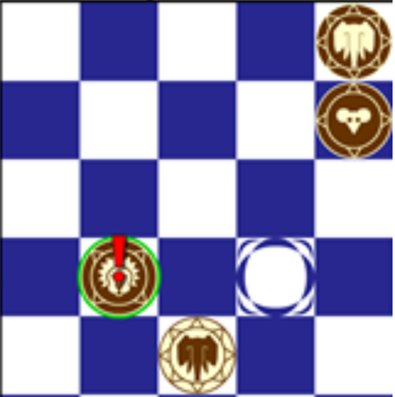

The Technology
Explaination of what Artificial Intelligence and Machine Learning techniques used.
Introduction
This report details how our team constructed a highly challenging, user-friendly, visually-pleasing, online Barca AI opponent. The graphics and user interface are hosted on a javascript application that works on all browsers. This application, if prompted by the user make a move, will query a server that hosts a python file. This python file contains the artificial intelligence agent that searches several plies deep in a minimax tree to make the best move available to it and sends it back the the javascript frontend. The intuition that the artificial intelligence agent uses was refined using machine-learning techniques like self-play and gradient descent.
Python Prototype
The python prototype was a graphical, touch-sensitive, computerized Barca opponent that we created briefly before beginning the official project.
It features:
- Sound game logistics, not allowing illegal moves and only allowing the AI to make legal moves itself.
- Basic graphics: animated board, each of the twelve pieces, watering hole graphics, and fear animations.
- A board evaluation mechanism.
- A one-ply deep decision tree that the computerized opponent uses to determine its best move.
However, it lacked the following necessary characteristics:
- It was not able to be hosted as a web application.
- It did not have spectacular graphics or any graphics options.
- It did not have draw recognition or avoidance.
- Its decision tree was not deep enough to play at an acceptable difficulty level.
Although the decision search mechanism was extremely simple, it still makes a decent opponent, beating novice human players about half of the time.
Web-Hosted Application
We thought of several ways to implement this application on the web. One of the thoughts we initially stuck on was the C++ offline application where everything is stored on the frontend itself with no need for a server that makes the AI moves. However, we realized from professor’s input that it is not a good idea to do it that way since it is never good to have too much load on the frontend. Finally we reached the decision to separate both the frontend and the backend.
Frontend
When it comes to frontend, there were many languages we could have used to design it such as react.js but we have used plain HTML/CSS/Javascript as we thought that fancy languages might prevent us from implementing certain features. We had all the images stored in a folder and just used CSS and javascript elements to implement features like valid moves, different game modes like human v. human and AI v. human. Bhuvnesh has hosted the frontend of the application on his personal website domain. Some of the features of the frontend application include:
Valid Moves Feature
When a piece is clicked, there is valid moves button at the top. Once it is clicked, it displays valid moves if the piece chosen has valid moves to make a move. Green dots indicate that the chosen piece can be moved to one of those spots. Red dots indicate that the piece cannot be moved there i.e. it is scared. When show valid moves is clicked, valid moves feature is turned on and text on button changes to “Hide Valid Moves”. In this picture below, there is a red dot because mouse is scared of lion and it can't move there. However, it can move to any one of the green dots on the board.
Undo/Redo/Play From Here
Go back button is used to undo a move. Go forward is used to go forward a move that you just undoed. Play From Here is the button that needs to be clicked on to play from a certain position. However, you do not have to click play from here if you are back to the original board state after undoing and redoing moves.
Modes and Start Game
The modes of the game are Human vs. Human and AI vs. Human. Black or white move first but in AI mode, white player always moves first. Also, user can choose the difficulty level he wants to play the AI on namely Easy, Medium and Hard. The game will only start once the user clicks the start game button. If one game is being played and user wants to play a different game in different mode or as a different player, then he can click on the same button to restart another game.
BEV Heuristics
Another thing that we added to the frontend is the option for the user to choose to play with heuristics that have been obtained from gradient descent or non-gradient descent heuristics i.e. the original board heuristics we have. By default, the game starts with Non-ML board heuristics but if user wants to experiment how the AI plays differently with gradient descent heuristics, he may do so.
Backend
We have used heroku architecture for sending moves and receiving moves from the AI. For building the server itself, we have used python flask. To backup several AIs, we have different files for each AI version that we worked on and created endpoints for each of those so that the application that wants to use the other AI versions or is using AI versions does not encounter any problems if we decided to switch to use some other AI on the front end at any point of time. With this architecture, the only thing that needs to be changed is how we are sending the request on frontend to the backend and what endpoint URL we are sending the request to. The requests are sent back and forth in JSON format. The front end issues a POST request, i.e. posts some data to the backend and then the backend sends the move back to the frontend in the same JSON format.
Board evaluation
Overview
The AI agent checks several facets of the board and assigns them different values to determine how favorable a certain board position is.
The parameters of board evaluation are treated as a vector of integers. The first element of this “Board evaluation vector” may be the value given to the condition of owning one watering hole, the second element may be the value given to being able to scare an opponent’s piece next turn, etc. So the board is evaluated by taking a vector that contains boolean information about board conditions and taking its cross product with this board evaluation vector:
Heuristics
The backend uses multiple types of heuristics in order to best evaluate potential upcoming board positions. The list of heuristics includes:
This heuristic consists of an array of size four that contains all of the numeric values for having zero, one, two, and three watering holes. Through experimentation with gradient descent, we believe that it is best if having zero or one watering holes is equated a negative value, having two watering holes is equated with a positive value, and having three watering holes is equated with an extremely large positive value. The rationale as to why having zero or one watering holes is equated with a negative value is as a way of acting as a reinforcer for more watering holes. Having three watering holes is associated with a very high positive value as a way of indicating that a winning state exists.
Similar to heuristic one, this heuristic consists of an array of size four that contains all of the numeric values for being able to have one, two, and three watering holes by the next turn. This heuristic works best when given similar values to those of heuristic one. This heuristic acts as a relatively inexpensive, yet effective, way of assessing the current board position by doing a partial lookahead of which watering holes can be acquired the next turn. This is done by starting at each of the remaining unoccupied watering holes (at most four) and traversing in all 8 possible directions until either a piece is found or out of bounds is reached. If a piece is found, then a check is done if the piece can travel in the required direction and that it is not deterred from the watering hole. The agent is then rewarded by the number assigned to the total amount of watering holes it could have next turn, multiplied by the amount of ways there are to capture a watering hole next turn.
Each agent is rewarded for each of its pieces that are adjacent to each watering hole, as they serve to deter enemy pieces from the watering holes, and also deter enemy pieces from scaring its own pieces away from the watering holes.
This heuristic punishes an agent for having pieces that are in fear, because, being forced to move the pieces that are afraid, the agent has fewer move options and thus less control of the board. In order to eliminate having to check every piece with every other piece or checking all adjacent squares, every piece contains a reference to the two pieces that could possibly cause it fear.
Similar to heuristic three, this heuristic is a value that encourages the agent to posture its pieces closer to the center (where they generally tend to be more dominant and useful).
This heuristic encourages an agent to group different types of its own pieces together. The rationale is that each piece will deter the opponent’s pieces from scaring the other, so it is a stronger and more defensive position.
Finding the Best Move
Minimax and Alpha Beta Pruning
The backend uses Minimax in combination with Alpha Beta Pruning in order to best compare different board positions. Minmax essentially simulates one player who is choosing the boards with the greatest evaluation while the other player is choosing the boards with the lowest evaluation. While Minmax is being performed, alpha and beta cutoffs determine whether or not there is any benefit in traversing a particular board position. This eliminates any unnecessary board traversals.
In order to speed up the reversal of searches, we cached the feared characteristics of all the board positions. Calculating the feared characteristics of a board position is relatively expensive. So every time a board traversal is about to be made, we save the current feared characteristics of the old board. This eliminates having to re-calculate the feared characteristics when recovering to an older board position.
One of the things we experimented with was using iterative deepening in order to search board positions we predicted were the best early on in order to quickly get good alpha and beta cutoffs. Having good and tight alpha beta cutoffs early on better eliminates unnecessary board position traversals later. We realized that iterative deepening didn’t help the speed of the search, instead prolonging it because of additional board evaluations required for iterative deepening. In addition we believe that it is hard to predict the state of a board in Barca because the game can change very dramatically in a few turns.
Move Randomization
Every minimax search returns the best five moves available for that board. It then gives each of them a probability proportional to how favourable of a move each one is and chooses one at random. Thus, the agent will still make its best moves most of the time, but will occasionally chose to make different moves so as to be less predictable.
The first thing that is done during deciding which move to make among the five possibilities is making them all positive and sorting them in ascending order (giving additional incentives are given to the best moves among them). Then, the probability of each move is incremented by the board evaluation of the board resulting from that move.
Self-Play
Match Scoring
An integral part of the gradient descent architecture is knowing exactly how much better an AI using one board evaluation is than another AI using a different board evaluation vector. So we developed the following match scoring system to give a fair and high-resolution picture of how much better one AI is board evaluation vector is than another:
Since the white pieces (the ones that move first) has the advantage of initiative, both AI’s are given the chance to play white against each other. Naturally, for winning a game, the AI receives a reward, and, in the case of a draw, both AI’s are rewarded roughly equally.
Now this architecture is very fair, but not very high-resolution. If we are to use invariable reward amounts (say, +1 for winning, and +0.5 for drawing), then the answer of how much better one AI is than another would be some quantified amount, such as 0, 1.5, 2, etc. This is simply not accurate enough for high-resolution gradient descent, especially considering that a much more accurate scoring system can be implemented without much loss in efficiency.
So to be more accurate, we consider how long the game has lasted, and what each AI agent’s average board position evaluation was during the game. As for the former, winning in 18 moves is obviously much more impressive than winning in 150 moves, so, in the event of a victory, the AI’s reward is inversely proportional to the length of the game it won. As for the latter, in the case of a draw, even though neither agent won, one agent still performed slightly better than the other. The fairest way to quantify this is, for every board position each agent encounters, get that agent’s opinion of how favorable the board position is, and also the opposing agent’s opinion of how favorable the board position would be if he were playing on that side. Average these two number to get an “unbiased” account of how favourable each board position in the game is. The notion is that the agent that had the more favorable board positions throughout the game is slightly better than the other agent, even in the case of a draw. So in the case of a draw, the “better” agent will be rewarded by his average board position evaluation minus his opponent’s average board position evaluation.
Gradient Ascent
So now we have a layout that will tell us how much better one AI is than another, but how will we use this to find the best possible AI? Well, one can think of the situation like trying to maximize a variable (performance) that is a function of a vector (the board evaluation vector). While there is no known way of simply plotting performance as a function of board evaluation vector in the mathematical sense and using standard calculus methods to locate its maximum, we can compare its performance as different points and infer from this information what point to evaluate next. Fortunately, there is already a popular mechanism for doing this-- gradient ascent.
We perform gradient ascent in our situation by first approximating the partial derivative at the current point for every dimension of the board evaluation vector. This is done by playing an AI with the current board evaluation vector against another AI that uses that same board evaluation vector with a small delta added to one dimension. The performance gain is divided by the delta, and we now have the performance gain per unit increase in that dimension around that point. When we have this performance gain per unit increase in each dimension, they are compiled into a vector (called the gradient)-- this vector is the direction that is expected to give the greatest performance gains. We then choose our next BEV by traveling some distance in the gradient’s direction from the current BEV.
Problems encountered using gradient descent:
Simply because one is always traveling in the direction of the gradient does not mean that performance is actually improving every time. Once we realized this fact, we decided to use some reference BEV as a standardized way of evaluating the performance of each BEV we encounter.
There is also the issue of getting stuck around a local maximum. If we notice this behavior, we simply restart the process around this maximum, but using a different delta or learning rate. If even that failed, we would need to start at some other random point, but we have not needed to do so yet.
Additionally, the gradient descent can continue for some time without making any progress-- all of the points it is choosing to evaluate are not performing as well as a point you encountered before. Again, we would simply restart at the highest point reached so far with a different delta or learning rate upon noticing this behavior.
There is the issue that the board evaluation vector that is found to work extremely well with AI’s that perform shallow minimax searches often only has modest performance gains when used in AI’s that perform deeper searches. This is an issue because the AI’s that perform deeper searches take far too long to make a move, so gradient descent cannot be accomplished in a reasonable amount of time with them. Perhaps one would need to use a supercomputer to seek performance gains on the human-competitive AI’s using gradient descent.
Lastly, there are some strange issues that arise from our self-play scoring in gradient descent, such as board evaluation vectors that actually penalize having watering holes. By doing this, they are rewarded for not having watering holes while their opponent gets penalized for having them. Thus, in the case of draws, the board evaluation tallies make it appear as though these agents did significantly better than their opponents when their opponent was actually outperforming them the entire time. Future research on this project will find ways to keep this odd “changing the goalposts” situation from happening.
Expediting Move Updates
When a move is made, the board update technique used in this project is to recalculate all the valid moves of each piece individually and evaluate the board from scratch. Essentially, it does not use any information from the old board to evaluate the new one. However, seeing as only one piece can move at a time, there are more board attributes that remain the same between moves than attributes that change. Thus, if we are willing to invest some memory (of which there is more than enough on a computer), we can save significant amounts of time.
To expedite the board update process, for each piece, we would keep several data structures, such as:
- All of its visible moves in each direction
- All of its valid moves in each direction
- All of the squares adjacent to its visible moves in each direction
- If it is occupying, or is adjacent to a watering hole
- Pieces it is deterring and pieces it is deterred by
So that, when a move is made, only one piece (the piece that moved) will need to have all of its information completely re-evaluated. Every other piece’s information would only need to undergo re-evaluation if one of the following occurs:
- If a piece that was deterring you moved away
- If a piece moved into a visible move of yours (thus obstructing you)
- If a piece that was obstructing you moved away
- If a piece just deterred one of your moves
And even then, only a small subset of its information needs to be updated. Not only would this technique give us faster board updates when moves are made or considered, it would also give us more information about the board to use in our board evaluation function. For example,
- We could tell if a piece could capture a watering hole next turn in O(1) time.
- We would already know the number of valid moves that either side has available.
- We would be able to tell if a piece can scare or obstruct another piece next turn in only 11 O(1) hash lookups.
So simply by using some memory to save aspects of the previous board in the re-evaluation of the board after a move is made, we will get faster updates, faster board evaluation, and more foresight in our board evaluation.
This approach was not utilized in our project, but is the next major area of improvement if further research is to be done on this game.
Draw Mechanics
Consider the following situation:

The lion decides to move to this flight square:
The elephant decides to scare it again:
So the lion moves back:
And the Elephant determines that its best move is to recapture the watering hole, returning to the original position once again:

This back-and-forth movement could occur indefinitely, so if the same board position occurs three times, then either player can call it a draw as they see fit. So if an AI only ever made the best move available to it and had no memory of the board’s history, it will find itself in draws when it could have taken an advantage and possibly won the game instead.
Thus, we gave the AI agent a memory of the game’s history, and if the board being considered has occurred three times before, then it is given a board evaluation of zero. Thus it will not move into a draw if it has any move that will bring it an advantage, but will move into a draw when all other moves are disadvantageous.
Using a Database
At the moment, any minimax searches that search deeper than 3 moves ahead take too long to be practical. Thus, the only way to make moves using more foresight in an acceptable amount of time is to have already calculated which move to make and to have stored it in a database.
This database would essentially be a hierarchy of FIFO queues. The bottom FIFO queue would consist of moves that have only occurred once, and if a move occurs that is already in this queue, it is taken out of the queue and put into a higher queue, which contains all the moves that have occurred twice, and so on. Each of these queues stores several thousand board positions and the optimal response for each board position therein, and if the queue overflows, it discards the least recent move. Using this technique, we have the greatest chance of recognizing the most common moves and tracking how frequently they occur.
For the moves that occur more frequently, we will invest more time and do a deeper search on them so that most of the computation time is spent on the most important board positions. So for example, moves that have only occurred once or twice would have a 3-ply minimax search performed, just as normal moves would. However, moves that have occurred three or four times before would have a 4-ply search performed, moves that have occurred 5-15 times would have a 5-ply search performed on them, and the most frequent moves will have a very deep search performed on them.
The end result is that, when the AI is prompted to make a move, it can query this database in O(1) time, and if the board position is recognized, it will make a great move instantaneously. If the board position is not recognized, it will perform its usual technique.